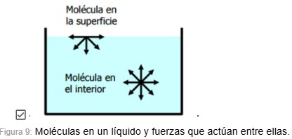
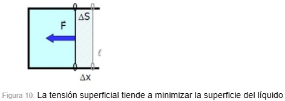
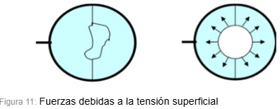
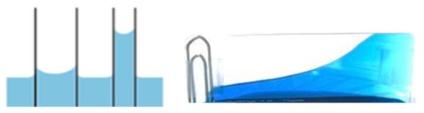

¿Qué es una wicking bed?
Una wicking bed es un sistema de autorriego que aprovecha el proceso de capilaridad a través de capas estratégicamente diseñadas, estas mismas buscan emular, a menor escala, las condiciones naturales de un suelo.
Para entender este mecanismo primero hay que comprender la composición de los suelos.
Como se observa, las capas van desde la piedra a compuestos más degradados. En los suelos esto sucede por la erosión (proceso de degradación y transporte de la superficie causado por agentes externos) a lo largo de los años. Por ello en la wicking bed utilizamos capas que simulan ese comportamiento natural del suelo, desde la más hasta la menos porosa, de esta manera se mantiene la presión necesaria para que el agua pueda ascender por la capilaridad.

PARTE SUPERIOR: Zona cultivable cargada con sustrato, dispone de un techo que protege el cultivo de agentes externos y de un tubo de carga que sale desde la zona inferior.
PARTE MEDIA: Hay una maya geotextil que divide la zona inferior de la superior, está hecha de un material que no obstruye el paso del agua y por el contrario permite que el fenómeno de capilaridad se pueda dar.
PARTE INFERIOR: Actúa como reservorio o tanque de agua, en su interior tiene un sistema de cañerías que permite desde el ingreso del agua a través del tubo de carga, hasta el desagüe a través de canillas exteriores. Esta zona está repleta de grava, creando un espacio poroso con la capacidad de retener grandes volúmenes de agua.
Fenómeno de capilaridad
Cada molécula de un líquido es atraída por todas las que le rodean, debido a las llamadas fuerzas de cohesión. La molécula que está en el interior es atraída en todas las direcciones, anulando unas fuerzas con otras. La molécula que está en la superficie es atraída por las que le rodean, en su mayoría por debajo de ella, dando lugar a una fuerza neta hacia el interior del líquido. Estas fuerzas, que hacen que la superficie se comporte como una membrana elástica, son las que dan lugar a la tensión superficial (Fig. 9).

La tensión superficial, es una característica de los líquidos, se define como la fuerza que tiene que hacer el líquido por unidad de longitud para disminuir su superficie (Fig. 10).

Se puede comprobar en el siguiente experimento: se introduce un anillo, con un hilo en forma de bucle, en una disolución jabonosa, al sacarlo se forma una película sobre la que flota el hilo, y al pinchar el interior del bucle desaparece la membrana de su interior y se forma un círculo. La tensión superficial tira del hilo para minimizar la superficie del líquido (Fig. 4). Esta es la razón de la forma esférica de la gota y de la pompa de jabón, debido a que la esfera es la figura geométrica que tiene la mínima superficie para un determinado volumen.

(capilar: conducto, tubo o poro de diámetro muy pequeño de 1 mm, y en el caso de los poros del suelo 0,08 mm) Cuando se introduce un capilar en el agua, ésta tiende a subir por la pared del capilar por ser Fa>Fc. Estas fuerzas dan lugar a una fuerza neta hacia arriba sobre el líquido que rodea la pared, debido a que la tensión superficial tiende a minimizar la superficie. El líquido sube hasta que, la componente vertical de la tensión superficial, se equilibra con el peso del líquido que se encuentra dentro del capilar (Fig. 12).


¿Qué materiales se necesitan y cómo se hace una Wicking Bed?
A continuación dejamos un video explicativo: